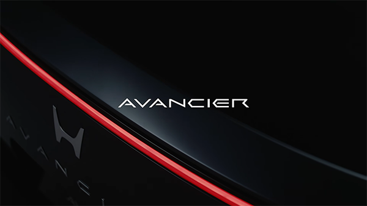
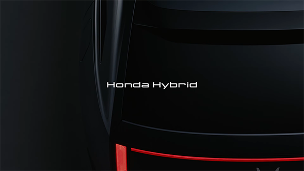
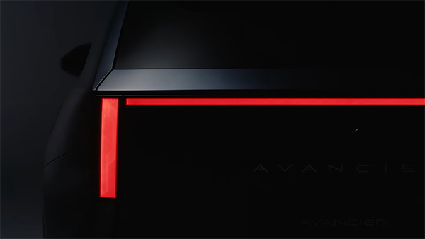
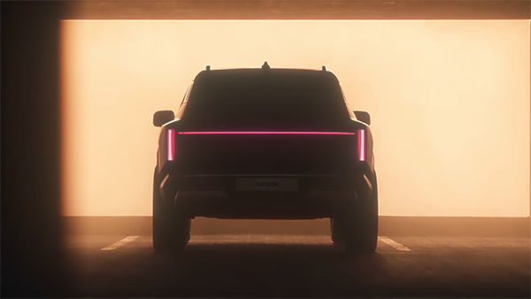

오늘 오후 12시, 혼다 공식 유튜브에 아반시어 티저 영상이 공개됨.
그런데 영상을 보다가 순간 멈칫함.
어...?

이 익숙한 테일램프는 뭐지?
분명 혼다 신차 공개 영상인데 자꾸 현대차가 생각남ㅋㅋㅋ

어디서 많이 본 듯한 이 익숙한 느낌.....
아래는 현대자동차의 디 올뉴 투싼 테일램프

물론 일자형 테일램프야 요즘 흔하다지만...
혼다 신차 티저 보다가 현대차 디자인 복습하게 될 줄은 몰랐음

ㅣ ㅡ ㅣ